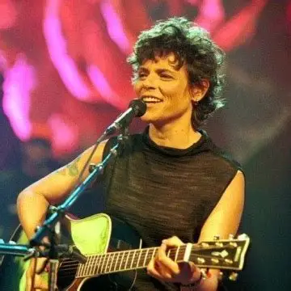
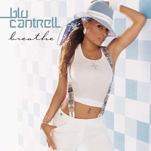

PLAYLIST
Navegue pelo site ao som dos melhores hits dos anos 2000.
CLIQUE PARA ESCUTAR.
capa do single "Baby one more time" com a imagem de Britney Spears ajoelhada no chão em um fundo cor de rosa.

em um fundo cor de rosa vibrante fotos de cada uma das 5 integrantes do grupo Rouge, "rouge" escrito em branco na parte superior
foto de Cássia Eller em uma apresentação ao vivo, ela tem um violão nas mãos e canta em frente a um microfone.
a cantora Blu Cantrell posa com roupas brancas e chapéu azul em um fundo claro